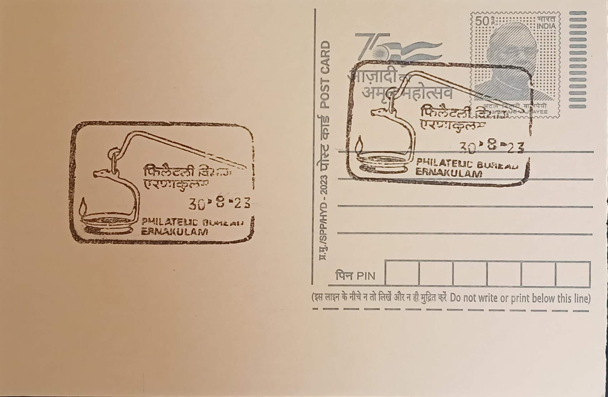

Thookkuvilakku
തൂക്കുവിളക്ക്


The word thookkuvilakku derives from the Malayalam thookku, meaning to hang or suspend, combined with vilakku, meaning lamp, and the term belongs to a broader family of Kerala oil lamps that also includes the floor-standing nilavilakku and the pedestal kuthuvilakku, nilam denoting ground and kuthu denoting a fixed stand. Unlike those upright forms, the thookkuvilakku is designed to be suspended by a hook or chain from ceiling beams, a configuration suited to the open wooden interiors of Kerala's traditional homes and temple halls, where lamps were historically positioned to illuminate verandas, courtyards, and shrine chambers without occupying floor space.
As a category, the thookkuvilakku belongs to Kerala's wider tradition of bell-metal and brass lamp craft, grouped among the five traditional accessories of Hindu ritual worship alongside flowers, incense, sandal paste, and food offerings, with the lit flame understood to symbolise the dispelling of ignorance and the invocation of divine blessing. Its significance is both devotional and domestic: temples use it during daily rituals and festival illuminations, while Nalukettu-style households traditionally hung it in the central courtyard or thekkini hall, making it one of the few ritual objects that moved fluidly between sacred and everyday household use rather than being confined to temple precincts alone.
The lamps are traditionally cast in bronze or brass by Kerala's Moosari metalworking community, one of six traditional kammala artisan groups who trace their craft lineage to Vishwakarma, the divine architect, with documented centres of production historically located in parts of Thrissur, Ernakulam, and Palakkad districts. Production follows the lost-wax casting method, in which a wax model of the lamp is coated in river-bed clay, fired so the wax melts and drains away, and then filled with molten metal that is revealed once the mould is broken apart, a labour-intensive process that produces a one-off casting for every finished piece. A typical thookkuvilakku takes the form of a shallow, disc-shaped oil basin suspended beneath an ornamental bracket, with versions commonly fitted for one, five, or seven wicks depending on size and intended use.
A distinguishing decorative feature of many thookkuvilakku is the annam or peacock-form bracket from which the lamp disc hangs, sometimes accompanied by small bells strung beneath the oil basin that chime gently when the lamp sways, adding a sonic element to temple ritual and household ceremony alike. More elaborate examples are built as tiered, multi-layered fixtures, with several lamp discs of graduated size stacked beneath one another on a single chain, each ring contributing additional light and movement, a form particularly favoured for festival display and for marriage ceremonies where rows of lit thookkuvilakku are hung to frame the ritual space.
Antique thookkuvilakku pieces, some dated to the early nineteenth century, are today held and traded as collectible examples of South Indian bronze craftsmanship, while newly cast versions remain in regular commercial production for temple suppliers, metalware showrooms, and households across Kerala, including workshops and retail outlets in and around Ernakulam that continue to serve the region's demand for ritual and decorative brassware. Electric lighting has largely displaced its original practical role in illuminating homes and courtyards, yet the thookkuvilakku persists as a fixture of wedding decor, temple offerings, and housewarming gifts, bought and hung less for its light output than for the auspicious presence it is believed to lend to the space beneath it.
| Date of Introduction | June 16, 1978 |
|---|---|
| Address | Incharge, |
| Philatelic Bureau, Ernakulam HO-PB, | |
| Ernakulam (dt.), Kerala - 682011. |